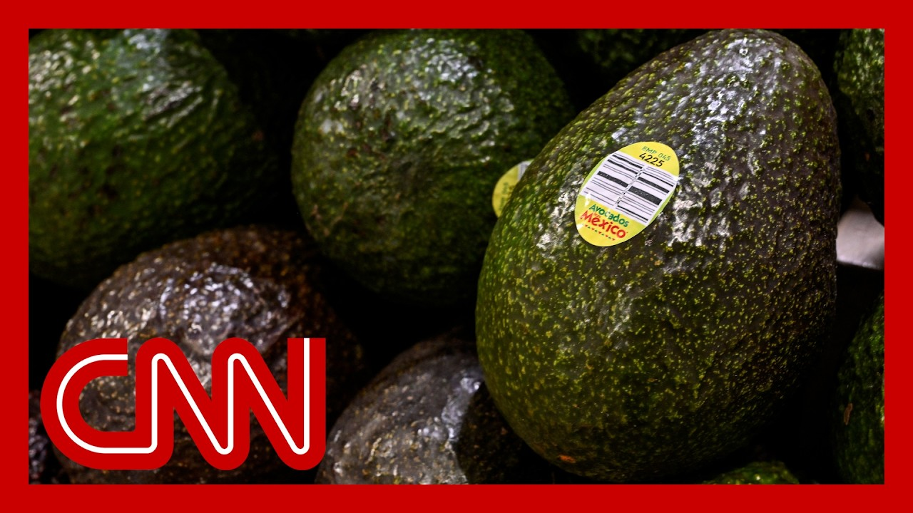

【特朗普宣布对墨西哥和欧盟征收30%关税】
Summary: U.S. President Trump announced new tariffs on Mexico and the European Union, escalating trade tensions. White House correspondent Becky Klein reported from New Jersey on the details, including the contents of letters Trump sent to the leaders of the two countries and the reactions from various parties. Democratic Congressman Brad Schneider criticized the move, saying it increases economic uncertainty and harms American consumers and small businesses.
摘要： 美国总统特朗普宣布对墨西哥和欧盟加征新关税，加剧了贸易紧张局势。白宫记者贝琪·克莱恩从新泽西报道了相关细节，包括特朗普致两国领导人的信件内容及各方反应。民主党众议员布拉德·施耐德批评此举增加经济不确定性，损害美国消费者和小企业利益。

⏱️ Estimated Reading Time: 10 min
📚 四级生词 📚 六级生词 📚 雅思生词 📚 托福生词 📚 专八生词 📚 SAT生词 📚 考研生词 📚 GRE生词 📚 高考生词 📚 其它生词生词
All right, President Trump announcing new tariffs against Mexico and the European Union this morning, feeling a wider trade for between the U.S. and its allies.
特朗普总统今早宣布对墨西哥和欧盟加征新关税，加剧了美国与盟友间的贸易紧张局势。
Senior White House reporter Betsy Klein is joining us now from New Jersey, where the president is spending the weekend at Betsy.
白宫资深记者贝琪·克莱恩从新泽西连线我们，总统正在那里度周末。
Great to see you.
很高兴见到你。
So, what more can you tell us?
你还有什么可以告诉我们的？
Yeah, Fred Riga, I just want to take a step back here to get to the root of all of this economic uncertainty.
是的，弗雷德·里加，我想先退一步探讨这经济不确定性的根源。
You will recall, President Trump essentially launched a global trade war back in April when he sent those reciprocal tariffs, reshaping the global economic order, and really rocking markets.
大家记得，特朗普总统四月通过互征关税发动全球贸易战，重塑全球经济秩序并震动市场。
He issued a 90-day pause shortly after that amid so much market volatility.
在市场剧烈波动后，他很快宣布了90天暂停期。
That 90-day pause came up this week.
本周这90天暂停期已到期。
The president announced he was extending that deadline to August 1st, allowing a little bit more time, but he was going to start sending out personalized letters to leaders of different U.S. trading partners.
总统宣布将截止日期延至8月1日，同时开始向美国贸易伙伴领导人发送个性化信件。
And we are seeing that just today, a pair of letters sent to Mexico and the European Union, of course, two of the United States' biggest trading partners, setting a tariff rate of 30 percent for both the EU and Mexico.
今天我们看到信件已发往墨西哥和欧盟——美国两大贸易伙伴，对两者均设定30%关税。
Now, I want to read to you a little bit from that letter to Mexico's president, Claudia Shindon.
现在我想宣读致墨西哥总统克劳迪娅·辛顿信件部分内容。
The president wrote quite quote, Mexico has been helping me secure the border, but what Mexico has done is not enough that he went on to say there will be no tariff if Mexico or companies within your country decide to build or manufacture product within the United States.
总统写道："墨西哥虽协助边境安全，但做得不够"，并称若墨西哥企业在美国生产将免征关税。
Now, shortly following that letter, a top Mexican economic official said that U.S. and Mexican officials had met on Friday, and the Mexican officials conveyed that that 30 percent tariff marked, quote, unfair treatment, and that they did not agree.
随后墨西哥经济高官表示，周五美墨官员会晤时墨方指出30%关税是"不公平待遇"且不予接受。
Of course, they did agree to continue to keep negotiating and try to get to a better deal.
不过双方同意继续谈判以达成更好协议。
Also, on the EU side, the European Commission President Ursula Von Der Leyen, she says they are ready to continue working toward an agreement by that August 1st deadline.
欧盟委员会主席冯德莱恩表示愿在8月1日前继续推进协议。
Of course, all of this contributing to so much mounting uncertainty for investors, consumers, and businesses alike leading up to that August 1st deadline for Erika.
这一切在8月1日前加剧了投资者、消费者和企业的普遍不确定性。
Indeed.
确实如此。
All right.
好的。
Betsy Klein, thanks so much, New Jersey.
贝琪·克莱恩，非常感谢你从新泽西发回的报道。
Starting next month, President Trump says he's slapping new tariff, so on 30 percent rather on Mexico and the European Union.
特朗普总统宣布下月起对墨西哥和欧盟征收30%新关税。
Today, Trump unveiled the new rates and letters to the leaders of the EU and Mexico, renewing uncertainty about how this trade war could impact the economy.
今日特朗普公布新税率及致欧墨领导人信件，贸易战对经济的影响再度引发不确定性。
Let's discuss now with Democratic Congressman Brad Schneider of Illinois.
现在与伊利诺伊州民主党众议员布拉德·施耐德展开讨论。
He's a member of the House Ways and Means Committee.
他是众议院筹款委员会成员。
Congressman great to see you this Saturday.
议员先生，周六见到您很高兴。
Good to be here.
很荣幸参与。
All right.
好的。
So what's your reaction to this news and on a weekend?
您对此消息及周末宣布有何看法？
Well, specifically, it's a weekend, so you're not going to see your reaction to stock market, but we know a few things.
具体而言，周末股市休市，但我们清楚几点。
Number one, tariffs are attacks on the American consumer.
第一，关税是对美国消费者的打击。
There's a place for tariffs.
关税有其适用场景。
Tariffs should be used when you're punishing bad actors, protecting specific national interests, but the president is using tariffs in this on again, off again, unpredictable, quite literally unhelpful way that is only driving more uncertainty, instability within the American stock market with the American consumers and American companies.
关税应用于惩罚恶意行为体或保护国家利益，但总统反复无常的使用方式只会加剧市场、消费者和企业的不稳定性。
Really hurting American small businesses.
这严重伤害美国小企业。
And it seems like it's every other week, or if not every week, you know, there is something about the tear of policies coming out, new country being imposed with tariffs.
几乎每周都有新关税政策出台。
And as you mentioned, tariffs might serve as punishment, but in this case, are you starting to see that it's the U.S. economy as a whole that's being used almost like a weapon?
您是否认为美国经济正被武器化？
Well, he is weaponizing the American economy, but the people are going to be hurt the most are the American people, American consumers.
他确实在武器化美国经济，但受伤最深的将是美国民众。
He's using it now, his threats against Brazil, if he percent tariff, if they don't, and they're trial against Aviva Bolsonaro.
他现在威胁巴西若不配合就加税，这涉及巴西内政。
Well, that's internal Brazilian politics.
这属于巴西内政。
The American economy should not be used as a weapon there.
美国经济不应在此被用作武器。
His threats against our closest trading partners in Mexico and Canada, raising the cost of housing, the cost of food, the cost of automobiles, everything that Americans depend upon, and the markets week count on to be able to export to, he's putting those at risk and really hurting the hopes for Americans to provide for their families.
对墨加等贸易伙伴的威胁推高住房、食品、汽车等必需品价格，危及出口市场，损害美国家庭生计。
You mentioned it's putting real stresses on the small businesses as well.
您提到小企业也承受压力。
You've been back home in your district.
您近期返回选区时，
You've been talking to constituents, including some of those small business owners.
与小企业主等选民交流后，
And what are they saying, if not about the tariffs, but also about the passage of the president's budget bill?
他们对关税和预算案的看法如何？
What are people bracing for?
民众在担忧什么？
Well, you have to separate the two.
需区分两者。
So with tariffs, it's the uncertainty, it's the unpredictability, makes it impossible to make decisions.
关税政策的不确定性阻碍决策。
And I met with a company in my district learning resources that's been leading the charge, finding these tariffs, actually taking the president and the administration to court.
我选区某企业已就关税问题起诉政府。
But they have not just postponed decisions, they've canceled investments, in particular to expand their facilities here in our district.
他们不仅推迟还取消了本地设施扩建投资。
That's a multi-million dollar hit to our economy.
这对经济造成数百万美元损失。
On the Obama, the big beautiful bill, or really is a big bad bill for America, what we are seeing is an impact.
所谓"伟大"预算案实为"糟糕"，已产生负面影响。
I met with some health care providers who are bracing for the worst.
医疗从业者正做最坏打算。
People are worried about losing their health care.
民众担心失去医保。
It's a trillion dollar hit to Medicaid.
医疗补助将损失万亿资金。
But it's also the uncertainty created by this.
更制造了不确定性。
No one wants to see the economy shrink.
无人愿见经济萎缩。
We want to make sure it's growing.
我们需确保经济增长。
But the way to do that is for Democrats and Republicans to work together to provide an environment that is stable, predictable, and allowing our business leaders to make the decisions they need to invest in the future to introduce new products, to build new plans to hire more people and really to grow our economy.
两党应合作营造稳定环境，让企业能投资未来、创新招聘、推动经济。
Trump started sending out letters, notifying countries of tariffs that he plans to impose.
特朗普开始发函通知拟加征关税。
Today, he announced plans to impose 30 percent tariffs on Mexico and the European Union.
今日宣布对墨西哥和欧盟征收30%关税。
So what's with this strategy now?
当前策略意图何在？
And on the weekend, obviously, to not ride all the markets, but what's he doing?
选在周末宣布是否为避免冲击市场？
Right.
确实。
Well, it's very clear that the president's patience on these trade deals have thinned.
显然总统对贸易谈判耐心渐失。
What we had last heard from Secretary Besan was that they hope to wrap up all these trade conversations by Labor Day.
此前贝桑部长称目标劳动节前完成谈判。
Now, this is a later deadline than when Peter Navarro had originally said 90 deals in 90 days.
这比纳瓦罗"90天90协议"的原定目标更晚。
It's quite clear that the administration is recognizing that these trade negotiations take more time than what was perhaps expected.
政府已意识到谈判耗时超预期。
And the president himself had said that he would rather just set rates and not deal with this back and forth.
总统本人称宁愿直接设定税率而非反复磋商。
And then, you know, give these trading partners a little bit more time to negotiate with the U.S. should they decide to.
同时给予贸易伙伴更多协商时间。
But in a lot of ways, this is just him and his administration trying to follow through with the campaign promises that they made in a very quick way, you know, with the passing of the one-day beautiful bill.
这很大程度上是为快速兑现竞选承诺。
Most of his campaign promises have been codified into law.
多数承诺已立法落实。
And so, I think the fact that he is sort of rushing through with these letters isn't necessarily surprising in any way.
因此仓促发函并不意外。
All right.
好的。
Stephanie Lai, thank you so much.
斯蒂芬妮·莱，非常感谢。